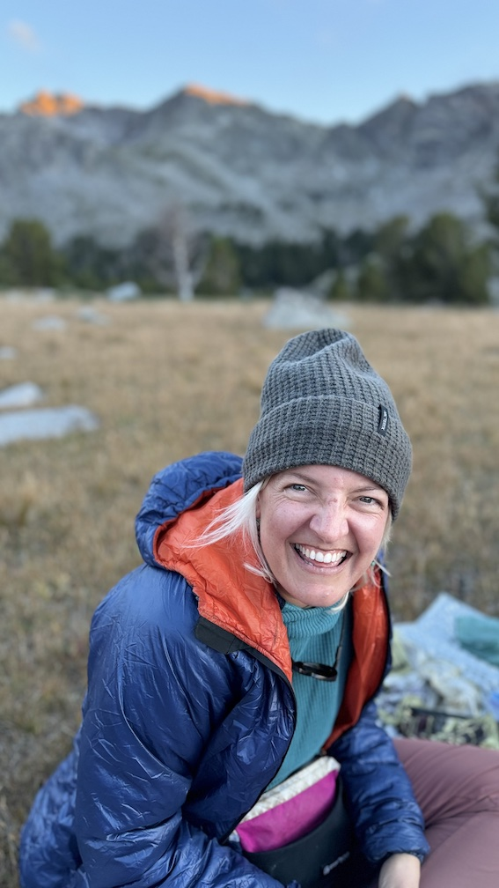

In the summer of 2024, I started a ~3000 mile long journey on the Continental Divide Trail down the Rocky Mountains. I started in Montana at the Canadian border and walked south for the next 5 months. Along the way I took pictures, wrote in my journal, sent messages to loved ones with the use of a satellite communicator and saved the locations of my campsites. This page is my process of combining all those parts of my trip into one data visualization.
Wanna Get in Touch? Want to talk about the trail? Gear? Code? A job? :D Shoot me an email at katy6514 [at] gmail [dot] com. I'd love to hear from you!